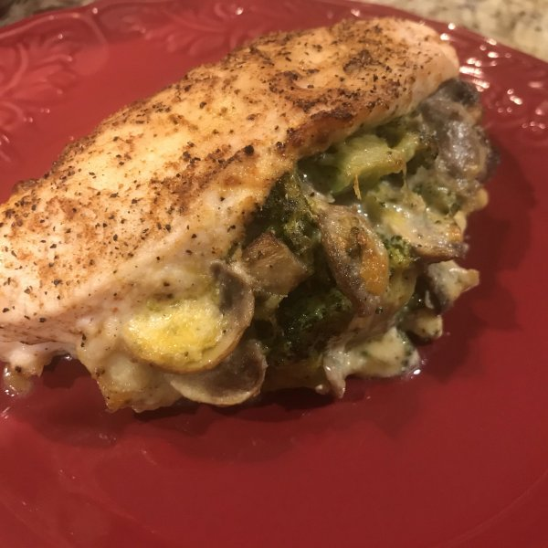

Mushroom, Broccoli, and Cheese Stuffed Chicken
Chicken stuffed with a cheesy broccoli and mushroom filling. Serve with a salad and roasted potatoes for a complete and satisfying meal.
Original Stuffed Chicken Recipe

Description
Chicken stuffed with a cheesy broccoli and mushroom filling. Serve with a salad and roasted potatoes for a complete and satisfying meal.
Ingredients
- 2 cups finely chopped broccoli florets
- 2 tablespoons water
- ½ cup shredded pepperjack cheese
- ¼ cup mayonnaise
- 4 small button mushrooms, sliced
- 1 teaspoon garlic powder
- 4 large chicken breasts
- 1 teaspoon paprika
- salt and ground black pepper to taste
Directions
-
Preheat the oven to 400 degrees F (200 degrees C). Line a baking sheet with aluminum foil.
-
Combine broccoli and water in a microwave-safe bowl. Cook in the microwave on high power for 2 minutes. Drain.
-
Combine cooked broccoli, pepperjack cheese, mayonnaise, mushrooms, and garlic powder in a large bowl.
-
Season both sides of each chicken breast with paprika, salt, and pepper. Use a sharp knife to cut a slice through the middle of each breast to create a deep pocket, making sure not to cut all the way through. Evenly stuff each breast with broccoli mixture and place on the prepared baking sheet.
-
Bake in the preheated oven until chicken is no longer pink in the center and juices run clear, about 35 minutes. An instant-read thermometer inserted into the center should read at least 165 degrees F (74 degrees C).
Recipe Home